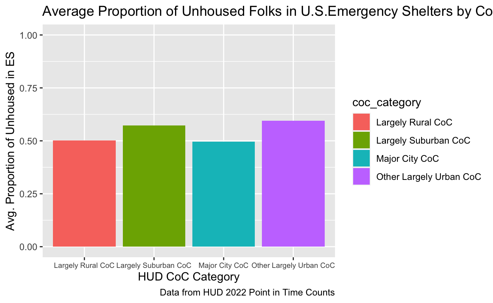
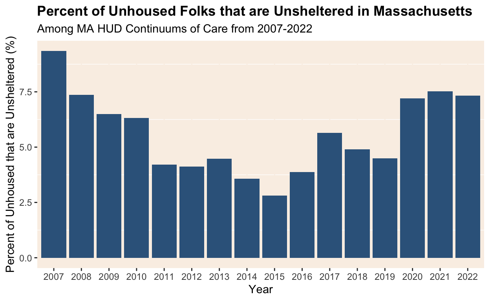
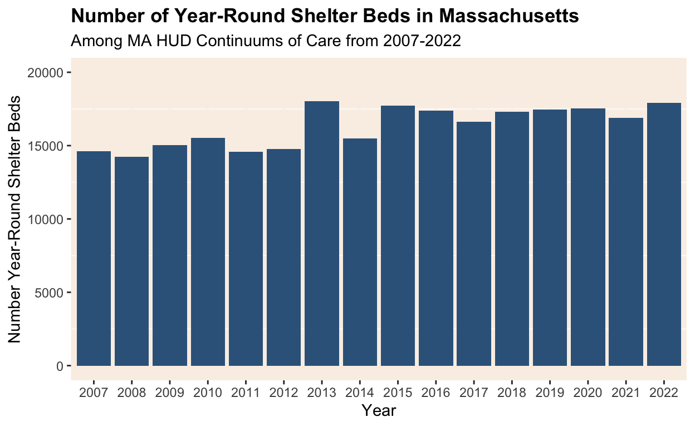

Final Project Milestone 1: Project Thoughts
I am interested in exploring data related to emergency homeless shelters in Boston, MA or a city in my home state of Michigan. More specifically, I’d like to examine the relationship between demographic factors like gender and age with utilization of the shelter and how that compares with the published demographic data of those experiencing homelessness in the area. I’d heard that the numbers of young adults experiencing homelessness in my hometown is increasing, but at the same time, there are no young adult homeless shelters that I know of. In Cambridge/Boston, there are only a few shelters that specifically serve young adults. I may need to shift my questions as I figure out what data is publicly accessible, but at the very least I know the topics I would like to research more.
Final Project Milestone 2: Project Proposal
It has been reported repeatedly that America’s homelessness and housing crises are on the rise, but how have homeless shelters changed as a result? Has shelter bed availability risen as well? In this study, I plan to examine how reported shelter bed availability in the United States has changed (or not) as the prevalence of homelessness has changed between the years of 2007 and 2022. Homelessness is incredibly stigmatized in this country and research has shown how discrimination against unhoused people has limited their political, economic, and social rights. A National Homelessness Law Center report found that between 2006 and 2019, city-wide bans on camping increased by more than 90%, and this is just one example of how homelessness is criminalized. Considering the abundance of anti-homelessness attitudes and legislation, I hypothesize that as the prevalence of homelessness has grown, especially in the past decade, shelter bed availability has not increased to the same extent.
I still need to select a particular CoC type for my unit of analysis. Through the Department of Housing and Urban Development (HUD), different geographic areas in the United States are identified as a particular CoC (a Continuum of Care), which is a regional group that coordinates housing and services funding for unhoused families and individuals as prescribed by the HUD CoC policies. There are different CoC types, for example, “Largely Rural”, “Major City”, “Largely Suburban” etc. The explanatory variable of interest is the proportion of the population that is considered to be homeless and the outcome variable is the number of available shelter beds for that same year. This data will come from a merging of two of HUD’s datasets focusing on Point in Time and Housing in Time counts for CoCs between the years of 2007 and 2022. As mentioned earlier, the CoC type is determined and defined by HUD. If I observe that the number of available shelter beds does not increase (remains similar or decreases) when the prevalence of homelessness increases, this would provide support for my hypothesis. If I observe that the number of available shelter beds increases as the prevalence of homelessness increases, this would provide support against my hypothesis.
Final Project Milestone 3: Data Visualization
#rename variable
unhoused1 <- unhoused |>
mutate(coc_category = `CoC Category`,
overall_homeless_2022 = `Overall Homeless, 2022`,
es_homeless_2022 = `Sheltered ES Homeless, 2022`,
prop_es_overall_homeless_2022 = `Sheltered ES Homeless, 2022`/`Overall Homeless, 2022`)
#find unique CoC categories
unique(unhoused1$coc_category)[1] "Other Largely Urban CoC" "Largely Rural CoC"
[3] "Largely Suburban CoC" "Major City CoC"
[5] NA #group data
unhoused2 <- unhoused1 |>
filter(!is.na(coc_category)) |>
group_by(coc_category) |>
summarize(avg_prop_es_overall = mean(prop_es_overall_homeless_2022, na.rm = TRUE))
#wrangle data
unhoused2_visual <- unhoused2 |>
ggplot(mapping = aes(x = coc_category, y = avg_prop_es_overall, fill=coc_category)) +
geom_col() +
scale_fill_discrete() +
ylim(0,1) +
theme(axis.text.x = element_text(size = 7)) +
labs(x = "HUD CoC Category",
y = "Avg. Proportion of Unhoused in ES",
title = "Average Proportion of Unhoused Folks in U.S.Emergency Shelters by CoC in 2022",
caption = "Data from HUD 2022 Point in Time Counts")
unhoused2_visual
Final Project Milestone 4: Data Visualization
library(tidyverse)
library(ggplot2)
library("readxl")
library(RColorBrewer)
#create dataframe for PIT Counts dataset
PIT_count <- read_excel("~/Downloads/2007-2022-PIT-Counts-by-CoC.xlsx", sheet = 18)
#create dataframe for HIC Counts dataset
HIC_count <- read_excel("~/Downloads/2007-2022-HIC-Counts-by-CoC.xlsx", sheet = 17)The boxplot below shows that among Massachusetts Continuums of Care (CoCs) the percentage of unsheltered unhoused folks has varied from 2007 to 2022. Notably, it appears it has been increasing the past few years since the onset of Covid-19 in the United States. With this context, the question of the relationship between shelter bed availability and prevalence of homelessness is an interesting and important one to explore.
#mutate PIT_count variable names (remove spaces)
PIT_count <- PIT_count |>
mutate(year = Year,
coc_number = `CoC Number`,
overall_homeless = `Overall Homeless`,
sheltered_homeless = `Sheltered Homeless`,
unsheltered_homeless = `Unsheltered Homeless`,
sheltered_es_homeless = `Sheltered ES Homeless`,
sheltered_th_homeless = `Sheltered TH Homeless`,
`Sheltered SH Homeless` = `Sheltered SH Homeless`,
prop_sheltered_homeless = `Sheltered Homeless`/`Overall Homeless`,
prop_unsheltered_homeless = `Unsheltered Homeless`/`Overall Homeless`)
#mutate HIC_count variable names
HIC_count <- HIC_count |>
mutate(year = Year,
coc_number = `CoC Number`,
total_yr_beds = `Total Year-Round Beds (ES,TH)`,
total_yr_es_beds = `Total Year-Round Beds (ES)`)
#visualize over unsheltered trend over time
PIT_count_over_time <- PIT_count |>
group_by(year) |>
summarize(state_sheltered_prop = sum(sheltered_homeless)/sum(overall_homeless)*100,
state_unsheltered_prop = sum(unsheltered_homeless)/sum(overall_homeless)*100)
PIT_count_over_time_visual <-ggplot(data = PIT_count_over_time,
mapping = aes(x = factor(year),
y = state_unsheltered_prop)) +
geom_col(stat="identity", fill="steelblue4") +
scale_x_discrete(breaks = seq(2006,2023, 1)) +
theme(panel.background = element_rect(fill = 'linen'),
panel.grid.major = element_line(color = 'linen'),
plot.title = element_text(face="bold")) +
labs(
x = "Year",
y = "Percent of Unhoused that are Unsheltered (%)",
title = "Percent of Unhoused Folks that are Unsheltered in Massachusetts",
subtitle = "Among MA HUD Continuums of Care from 2007-2022",
source = "HUD Housing Inventory Count"
)
PIT_count_over_time_visual
Final Project: Exploring Homeless Shelters’ Responsiveness to Bed Needs in Massachusetts
Introduction
It has been reported repeatedly that America’s homelessness and housing crises are on the rise, but how have homeless shelters changed as a result? Has shelter bed availability risen as well? In this study, I plan to examine how reported shelter bed availability in the United States has changed (or not) as the prevalence of homelessness has changed between the years of 2007 and 2022. Homelessness is incredibly stigmatized in this country and research has shown how discrimination against unhoused people has limited their political, economic, and social rights. A National Homelessness Law Center report found that between 2006 and 2019, city-wide bans on camping increased by more than 90%, and this is just one example of how homelessness is criminalized. Considering the abundance of anti-homelessness attitudes and legislation, I hypothesize that as the prevalence of homelessness has grown, especially in the past decade, shelter bed availability has not increased to the same extent. If I observe that the number of available shelter beds does not increase (remains similar or decreases) when the prevalence of homelessness increases, this would provide support for my hypothesis. If I observe that the number of available shelter beds increases as the prevalence of homelessness increases, this would provide support against my hypothesis.
Data
The data comes from a merging of two of the Department of Housing and Urban Development (HUD)’s datasets (1) Point in Time and (2) Housing in Time counts for Continuums of Care (CoC) between the years of 2007 and 2022. [CLARIFY point in time and housing in time]. As mentioned earlier, the CoC type is determined and defined by HUD. Through the HUD, different geographic areas in the United States are identified as a particular CoC, which is a regional group that coordinates housing and services funding for unhoused families and individuals as prescribed by the HUD CoC policies. There are different CoC categories, for example, “Largely Rural”, “Major City”, “Largely Suburban” etc. The CoC categories present in Massachusetts are “Major City”, “Largely Suburban”, and “Other Largely Urban.”
The explanatory variable of interest is the proportion of the population that is considered to be homeless and the outcome variable is the number of available year-round shelter beds for that same year. These variables are self-reported by the CoCs through the HUD’s Homeless Management Information System. [EXPLAIN HOW THEY GET POINT IN TIME COUNTS and housing inventory counts]
I will be exploring the relationship between the homeless population and available year-round shelter beds through observational data. [specify research design]
Preparing the data
library(tidyverse)
library(ggplot2)
library("readxl")
library(RColorBrewer)
#create dataframe for PIT Counts dataset
PIT_count <- read_excel("~/Downloads/2007-2022-PIT-Counts-by-CoC.xlsx", sheet = 18)
#create dataframe for HIC Counts dataset
HIC_count <- read_excel("~/Downloads/2007-2022-HIC-Counts-by-CoC.xlsx", sheet = 17)
#mutate PIT_count variable names (remove spaces)
PIT_count <- PIT_count |>
mutate(year = Year,
coc_number = `CoC Number`,
overall_homeless = `Overall Homeless`,
sheltered_homeless = `Sheltered Homeless`,
unsheltered_homeless = `Unsheltered Homeless`,
sheltered_es_homeless = `Sheltered ES Homeless`,
sheltered_th_homeless = `Sheltered TH Homeless`,
`Sheltered SH Homeless` = `Sheltered SH Homeless`,
prop_sheltered_homeless = `Sheltered Homeless`/`Overall Homeless`,
prop_unsheltered_homeless = `Unsheltered Homeless`/`Overall Homeless`)
#mutate HIC_count variable names
HIC_count <- HIC_count |>
mutate(year = Year,
coc_number = `CoC Number`,
total_yr_beds = `Total Year-Round Beds (ES,TH)`,
total_yr_es_beds = `Total Year-Round Beds (ES)`)Visualizing the Independent (CoC Homeless Count) and Dependent (CoC Year-Round Shelter Bed Count) Variables
I. CoC Homeless Count In the chart below, we see that the percent of unhoused folks that are unsheltered has varied over time. Though it appeared to be decreasing since 2007, there’s been a noticeable increase since the onset of the Covid-19 pandemic in the US in 2020. This variability motivates the question of whether shelter bed availability is responsive to need, based on the prevalence of homelessness.
#visualize over unsheltered trend over time
PIT_count_over_time <- PIT_count |>
group_by(year) |>
summarize(state_sheltered_prop = sum(sheltered_homeless)/sum(overall_homeless)*100,
state_unsheltered_prop = sum(unsheltered_homeless)/sum(overall_homeless)*100)
PIT_count_over_time_visual <-ggplot(data = PIT_count_over_time,
mapping = aes(x = factor(year),
y = state_unsheltered_prop)) +
geom_col(stat="identity", fill="steelblue4") +
scale_x_discrete(breaks = seq(2006,2023, 1)) +
theme(panel.background = element_rect(fill = 'linen'),
panel.grid.major = element_line(color = 'linen'),
plot.title = element_text(face="bold")) +
labs(
x = "Year",
y = "Percent of Unhoused that are Unsheltered (%)",
title = "Percent of Unhoused Folks that are Unsheltered in Massachusetts",
subtitle = "Among MA HUD Continuums of Care from 2007-2022",
source = "HUD Housing Inventory Count"
)
PIT_count_over_time_visual
[make some observation about the next bar plot about beds]
[insert bar plot of the number of beds total in MA over time]
#visualize Massachusetts CoC year-round beds
HIC_yr_visual <- ggplot(data = HIC_count,
mapping = aes(x = factor(year),
y = total_yr_beds)) +
geom_col(fill="steelblue4") +
ylim(0,20000) +
scale_x_discrete(breaks = seq(2006,2023, 1))
HIC_yr_visual 
Results
The first visualization is a scatterplot of CoC regions in Massachusetts with their corresponding number of unhoused folks and number of year-round shelter beds for each year from 2007 to 2022. There appears to be a positive association between the number of overall unhoused folks in a CoC region and the number of beds in that same region.
The second visualization shows the same scatterplot with a line of best fit. The positive association depicted by the line of best fit indicates that a higher number of unhoused folks in a CoC region corresponds to a higher number of year-round beds in that region. [DESCRIBE linear REGRESSION RESULTS]
[ADD MODEL SUMMARY]
#scatter plot prediction for total unhoused-total beds relationship
unhoused_yr_beds <- ggplot(homelessness, aes(x = overall_homeless, y = total_yr_beds)) +
geom_point(color = "rosybrown4", alpha = .5) +
theme(panel.background = element_rect(fill = 'linen'),
plot.title = element_text(face="bold")) +
labs(
x = "Number of Overall Unhoused Folks per CoC Region",
y = "Number of Year-Round Beds per CoC Region",
title = "Unhoused Count and Bed Counts in Massachusetts",
subtitle = "Among MA HUD Continuums of Care from 2007-2022",
source = "HUD Housing Inventory Count"
)
unhoused_yr_beds#scatter plot with line of best fit
unhoused_yr_beds_bestfit <- ggplot(homelessness, aes(x = overall_homeless, y = total_yr_beds)) +
geom_point(color = "rosybrown4", alpha = .5) +
theme(panel.background = element_rect(fill = 'linen'),
plot.title = element_text(face="bold")) +
labs(
x = "Number of Overall Unhoused Folks per CoC Region",
y = "Number of Year-Round Beds per CoC Region",
title = "Unhoused Count and Bed Counts in Massachusetts with Line of Best Fit",
subtitle = "Among MA HUD Continuums of Care from 2007-2022",
source = "HUD Housing Inventory Count"
) +
geom_smooth(method = "lm", se = FALSE, color = "black", size = .6)
unhoused_yr_beds_bestfit#linear regression for the two variables
simple_fit <- lm(total_yr_beds ~ overall_homeless, data = homelessness)
simple_fit
Call:
lm(formula = total_yr_beds ~ overall_homeless, data = homelessness)
Coefficients:
(Intercept) overall_homeless
-10.5031 0.8261 [DESCRIBE MULTIPLE REGRESSION RESULTS]
[ADD MODEL SUMMARY]
#add coc_category
homelessness <- homelessness |>
mutate(coc_category = case_when(
coc_number == "MA-500" ~ "Major City CoC",
coc_number == "MA-502" ~"Largely Suburban CoC",
coc_number == "MA-503" ~ "Largely Suburban CoC",
coc_number == "MA-504" ~ "Largely Suburban CoC",
coc_number == "MA-505" ~ "Largely Suburban CoC",
coc_number == "MA-506" ~ "Largely Suburban CoC",
coc_number == "MA-507" ~ "Largely Suburban CoC",
coc_number == "MA-509" ~ "Other Largely Urban CoC",
coc_number == "MA-511" ~ "Largely Suburban CoC",
coc_number == "MA-515" ~ "Largely Suburban CoC",
coc_number == "MA-516" ~ "Largely Suburban CoC",
coc_number == "MA-519" ~ "Largely Suburban CoC",
))
#multiple linear regression with added controls of year and coc_category
mult_fit <- lm(total_yr_beds ~ overall_homeless + year + coc_category, data = homelessness)
mult_fit
Call:
lm(formula = total_yr_beds ~ overall_homeless + year + coc_category,
data = homelessness)
Coefficients:
(Intercept)
-7.127e+04
overall_homeless
4.106e-01
year
3.554e+01
coc_categoryMajor City CoC
3.141e+03
coc_categoryOther Largely Urban CoC
-1.307e+02 boston_PIT_count_over_time <- PIT_count |>
group_by(year) |>
filter(coc_number == "MA-500") |>
summarize(state_sheltered_prop = sum(sheltered_homeless)/sum(overall_homeless)*100,
state_unsheltered_prop = sum(unsheltered_homeless)/sum(overall_homeless)*100)
boston_PIT_count_over_time_visual <-ggplot(data = boston_PIT_count_over_time,
mapping = aes(x = factor(year),
y = state_unsheltered_prop)) +
geom_col(stat="identity", fill="steelblue4") +
scale_x_discrete(breaks = seq(2006,2023, 1)) +
theme(panel.background = element_rect(fill = 'linen'),
panel.grid.major = element_line(color = 'linen'),
plot.title = element_text(face="bold"))
boston_PIT_count_over_time_visual